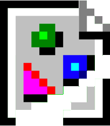
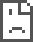
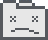

Gallery 404
The Museum of Broken net.art Art
The culture of a generation, lost to time.
About Gallery 404 and the preservation of digital artifacts.

The culture of a generation, lost to time.
About Gallery 404 and the preservation of digital artifacts.